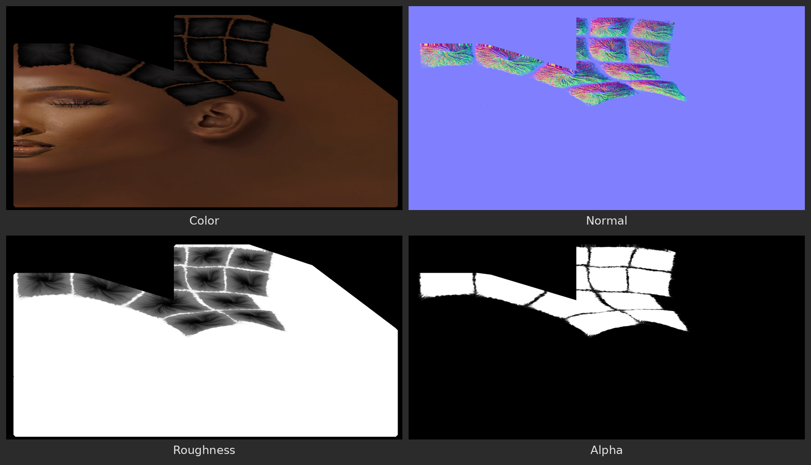

Bake And Save Textures¶
Applies to: Parting Placer V2.0.0 · Blender 4.4 · 5.2
Turn your partings into image maps and save them as PNG files.
You Need First
- A head with a UV map
- At least one parting. See Place Partings.
Steps¶
- If the Preview box shows Disable Preview, select it.
- Select the arrow beside Bake to open the box.
- Pick a Resolution.
- Pick a Normal Resolution.
- To bake a Normal map, turn on Live Bump at the bottom of the Appearance box.
- Tick the maps you want: Color, Normal, Roughness, and Alpha if you want a transparent overlay later.
- Select Bake Partings.
- Wait for the save row to appear under the buttons.
- Select Save Textures.
- Pick a folder.
- Confirm the folder.
Each map is saved as its own PNG, named after the head, the style, the map and its size. For example: head_Style 1_Partings_Color_1024.png.

Your partings stay live, so you can keep tweaking and bake again. To swap them for the baked images, see Apply Bake.
If You're Stuck
- Bake Partings is greyed out? See Bake Partings Is Greyed Out Or Refuses.
- Small holes in the maps? See Partings Bake With Small Holes In Them.
- Maps gone? See My Baked Maps Vanished.
Recommended next: Export A Transparent Overlay